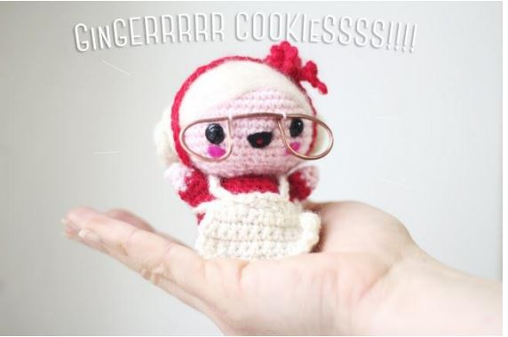
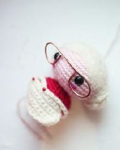

Grand-mère
This a crochet project for beginners to intermediate. You will practice how to crochet different amigurumi structures as well as how to add felt details to amigurumis. What will happen to Santa Claus without her beloved partner Mama Santa? She helps him with the daily activities in the Factory. Preparing the presents of all the kids of the world is not a easy task, you need help of hundreds of elves plus the love and talent of Mama Santa. Mama Santa lives with Santa Claus in "Ear fell" in the Finnish Lappland. Amigurumi Mama Santa We made Santa Claus a companion "Mama Santa" because togehter both of them are the personification of the importance of female and male energies on our planet. We as individuals are created of the same stardust and we complement each other in everything we do. One could not live without the other.:) The hook ninja mascot.
For this Amigurumi you will need
- White felt
- Red Yarn 4mm
- Peach Yarn 4mm
- White Yarn 4mm
- Black Yarn 4mm
- Felting Needle
- Optional pink felt for the cheeks
- 1 pair of safety eyes
- Fiber filling
- A Hook 4mm
- A piece of copper wire
- Tweezers
- Round 1: 6 sc in magic ring (6 sts)
- Round 2: Inc around (12 sts)
- Round 3: *Inc, sc*, around (18 sts)
- Round 4: *Inc, 2sc*, around (24 sts)
- Round 5: *Inc, 3sc*,around (30 sts)
- Round 6: *Inc, 4sc*, around (36 sts)
- Round 7: *Inc, 5sc*, around (42 sts)
- Round 8 - 13: Sc around (42 sts)
- Round 14: *Dec, 5sc*, around (36 sts)
- Round 15: *Dec, 4sc*, around (30 sts)
- Round 16: *Dec, 3sc*, around (24 sts)
- Round 17: *Dec, 2sc*, around (18 sts)
- Round 18: *Dec, sc*, around (12 sts)
- Round 19: Dec around (6 sts)
- Round 20: Fasten off and weave in ends.
- Round 1: 6 sc in magic ring (6 sts)
- Round 2: Inc around (12 sts)
- Round 3: *Inc, sc* around (18 sts)
- Round 4: *Inc, 2sc* around (24 sts)
- Round 5 - 8: sc around (24 sts)
- Round 9: *Dec, sc* around (18 sts)
- Round 10: Fasten off and leave a tail to sew later.
- Round 11: Fill the head with stuffing.
- Round 1: ch13
- Round 2: sc in each, turn and sc in each 5 times.
- Round 3: Fasten off, weave the ends

- Round 1: Chain 30 sew as shown in the picture.
- Round 1: Sc 4 into mr (4 sts)
- Round 2: Inc around, place marker (8 sts)
- Round -: Switch to red yarn
- Round 3 - 6: sc around (8 sts)
- Round 7: Fasten off, leave a tail for sewing to the body.
- Round 1: Sc 5 into mr (5 sts)
- Round 2: Inc around (10 sts)
- Round 3: Sc around (10 sts)
- Round 4: Fasten off, leave a tail to sew to the body.
- Round 1: Ch 61 sts, Fasten off and tie with a bow
- Round -: En fil de fer
- Round 1: Take the piece of copper wire and your tweezers, cut a piece measuring app 10 cm.
- Round 2: with the help pf the tweezers twist the wire starting from the outer part inwards, cut the remain wire.
- Round 3: Sew them on place with white thread.